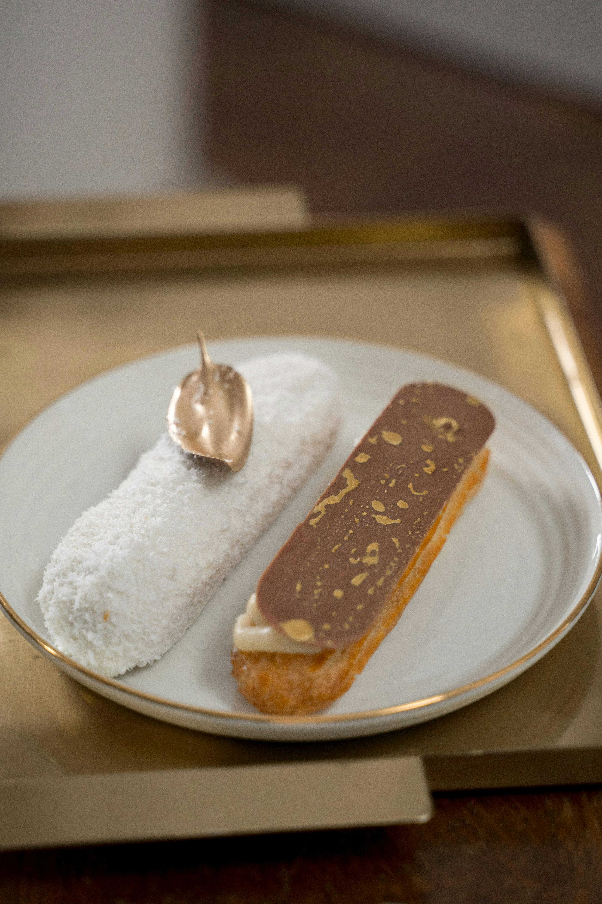
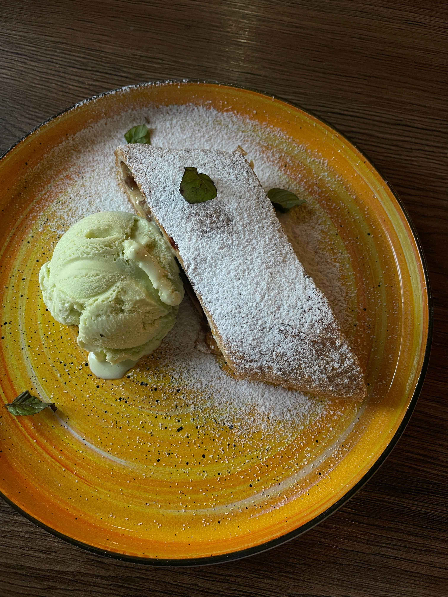

Our Pastry Recipes

Croissant
Flaky, buttery croissants made with layers of laminated dough.
Ingredients:- 2 cups flour
- 1/2 cup butter
- 1/4 cup sugar
- 1/2 cup milk
- 1 tsp yeast
- 1 egg
- Mix yeast, sugar, and warm milk.
- Add flour and knead the dough.
- Fold in butter and refrigerate overnight.
- Roll, cut, shape, and bake at 375°F (190°C) for 20 minutes.

Danish Pastry
Light and flaky Danish pastries with a sweet filling.
Ingredients:- 2 cups flour
- 1/2 cup butter
- 1/2 cup sugar
- 1/2 cup milk
- 1 tsp yeast
- Fruit or cream cheese for filling
- Prepare the dough and let it rise.
- Roll, fold in butter, and refrigerate.
- Cut and add desired filling.
- Bake at 375°F (190°C) for 20 minutes.

Puff Pastry
Delicate, flaky pastry used for both sweet and savory treats.
Ingredients:- 2 cups flour
- 1 cup butter
- 1/2 tsp salt
- 1/2 cup cold water
- Mix flour and salt, add cold water.
- Fold in butter using the laminating method.
- Roll and chill multiple times.
- Bake at 400°F (200°C) until golden brown.

Éclair
French pastry filled with cream and topped with chocolate glaze.
Ingredients:- 1 cup water
- 1/2 cup butter
- 1 cup flour
- 4 eggs
- 1 cup whipped cream
- Chocolate glaze
- Boil water and butter, add flour and mix.
- Incorporate eggs and pipe onto baking sheet.
- Bake at 375°F (190°C) for 25 minutes.
- Fill with cream and glaze with chocolate.

Apple Strudel
Traditional pastry with a spiced apple filling.
Ingredients:- 2 cups flour
- 1/2 cup butter
- 1/2 cup sugar
- 3 apples, sliced
- 1 tsp cinnamon
- 1/4 cup raisins
- Prepare the dough and let it rest.
- Roll out thinly and fill with apple mixture.
- Roll up and bake at 375°F (190°C) for 30 minutes.